Back to story
Autotrader.pl marketplace redesign.
A car-sale platform case about improving marketplace browsing, the ad-builder flow, publishing, and brand expression around a measurable conversion lift.
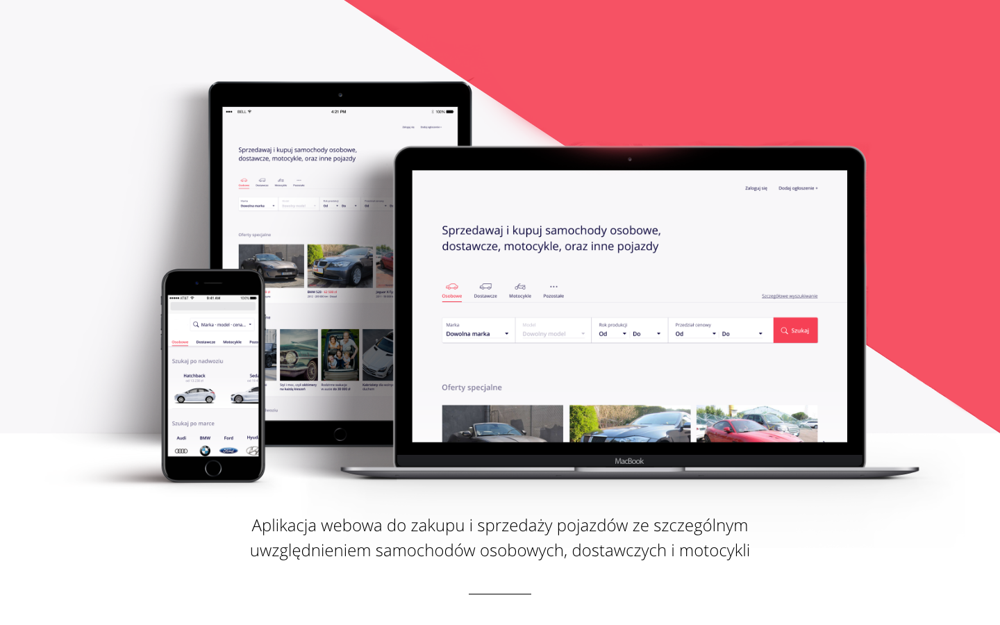
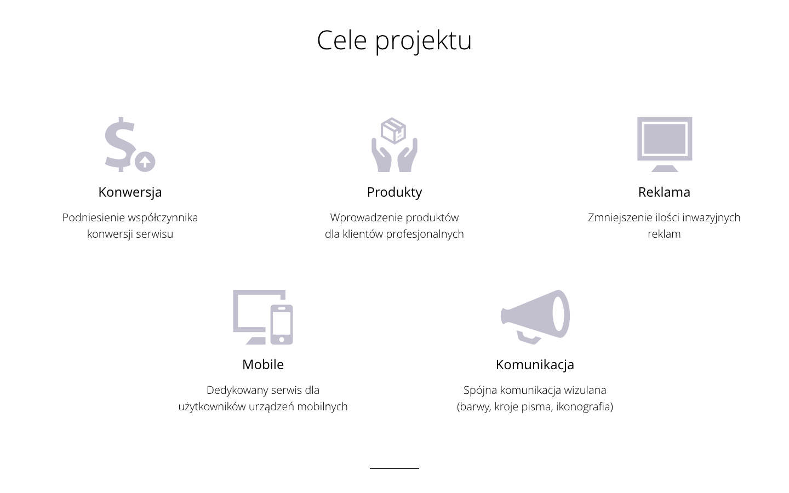
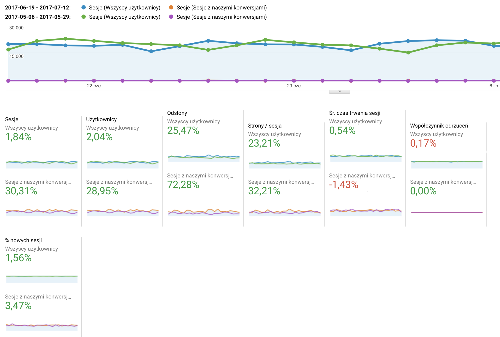
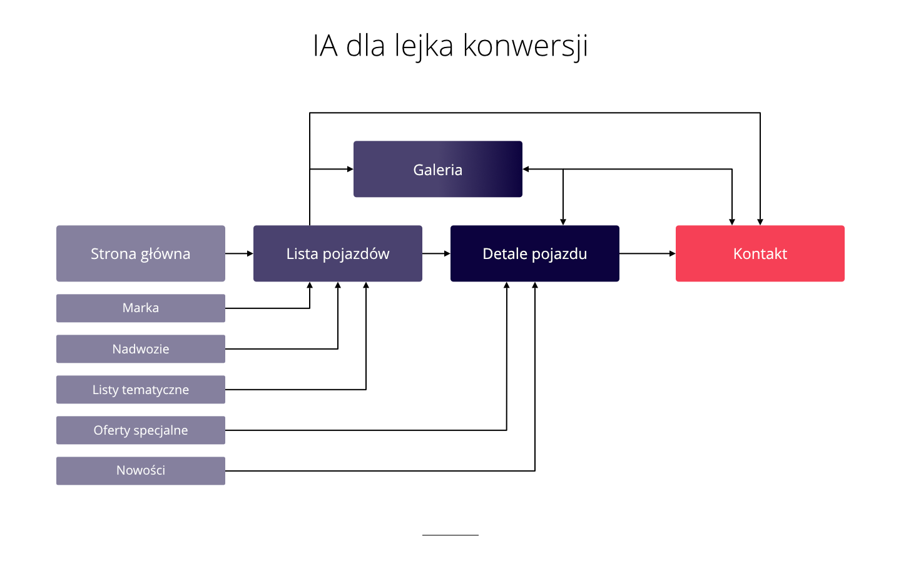
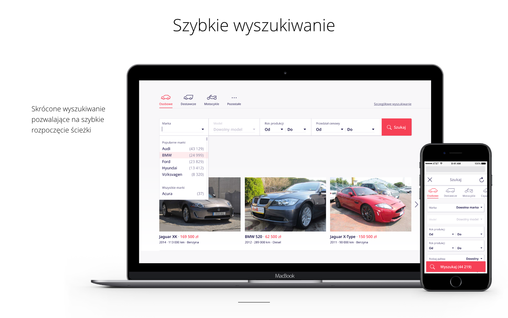
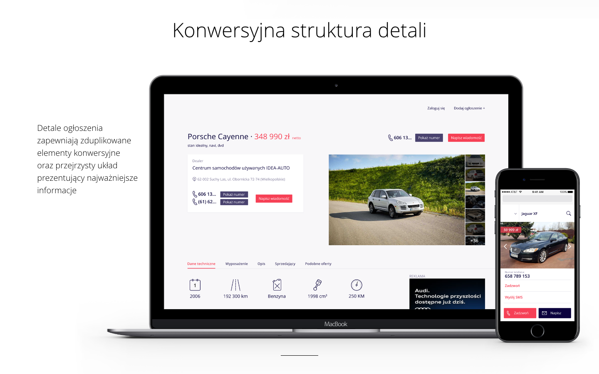
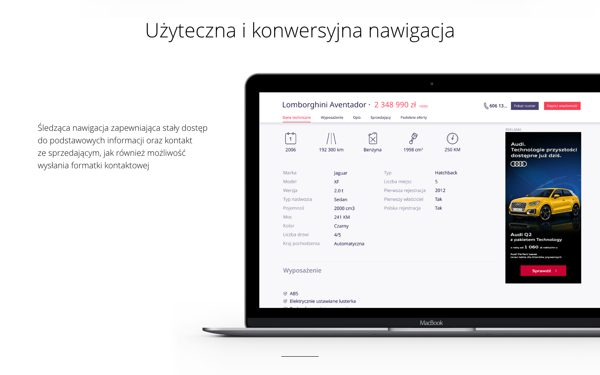
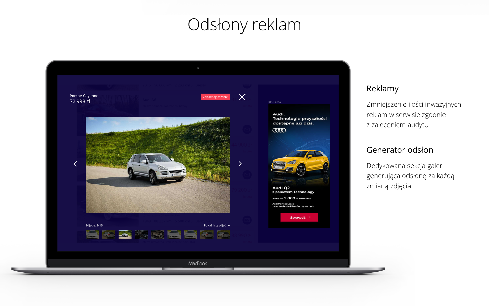
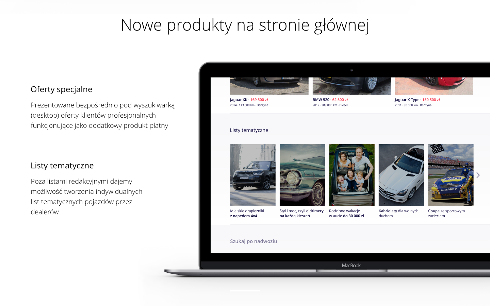
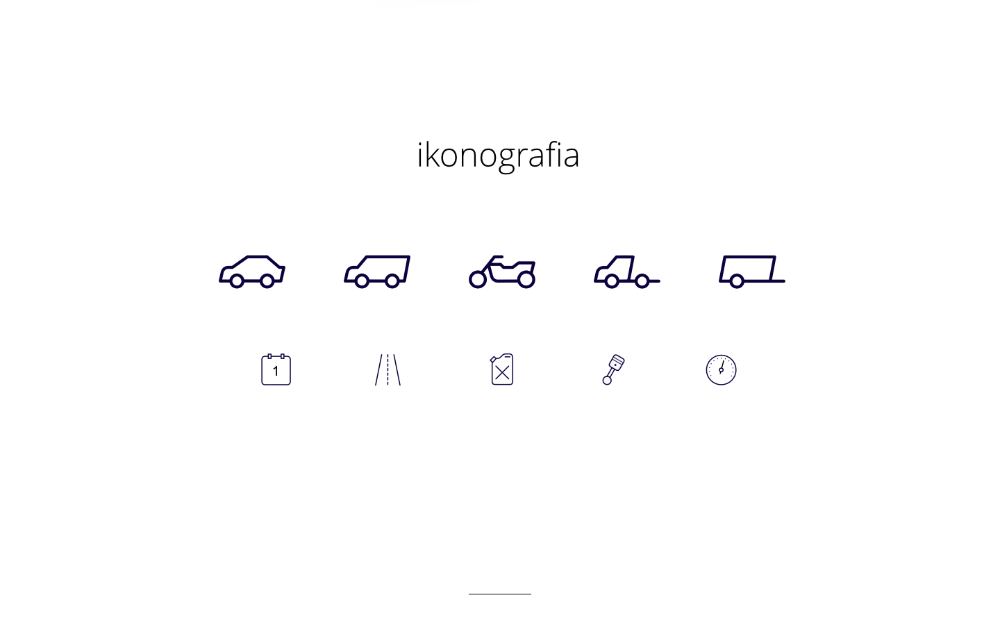
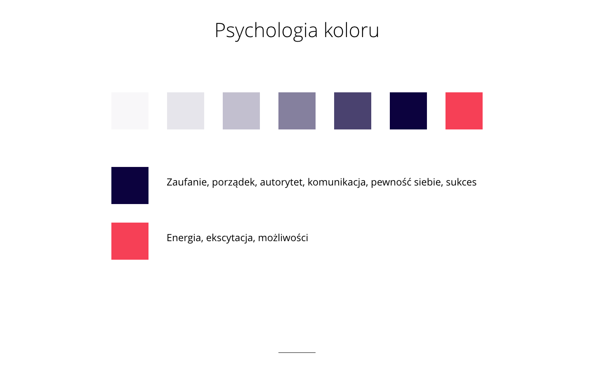
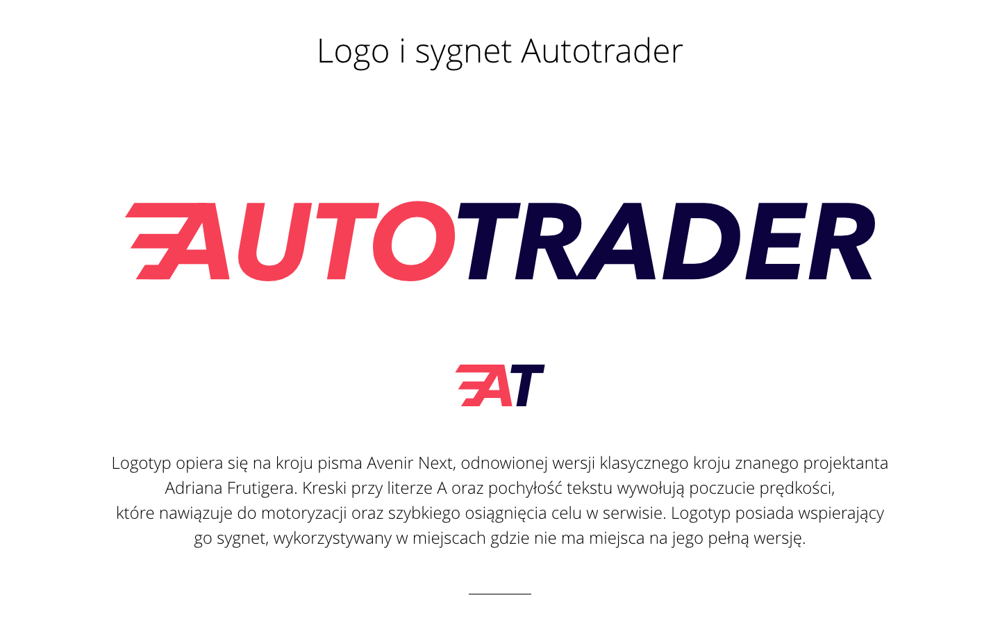